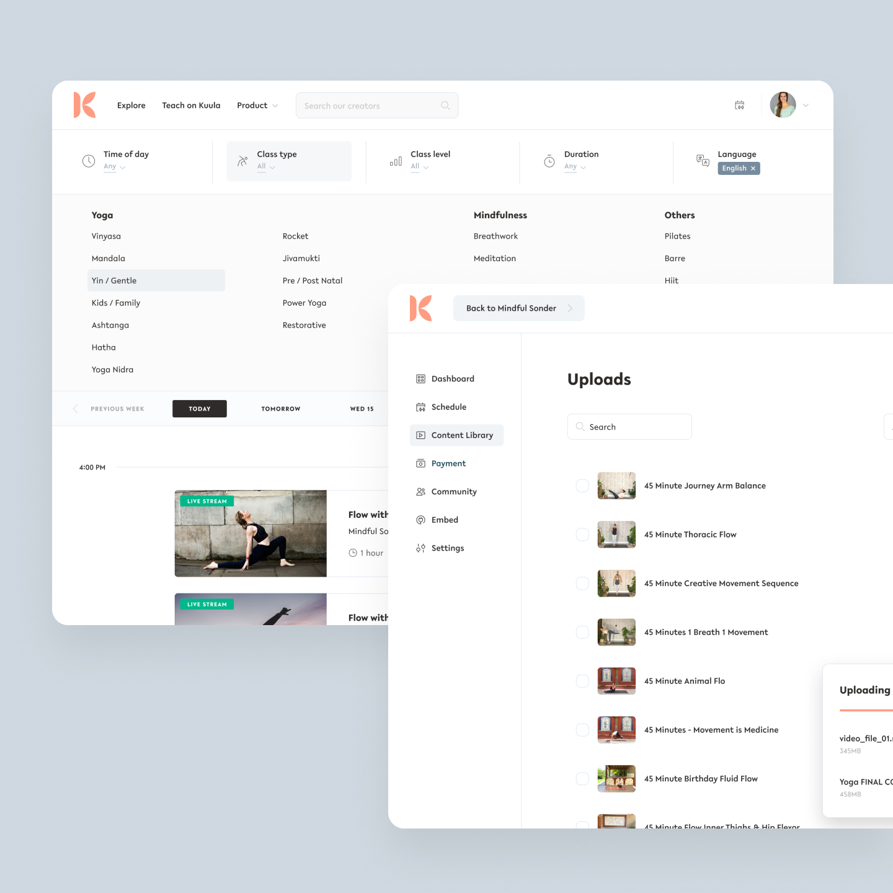
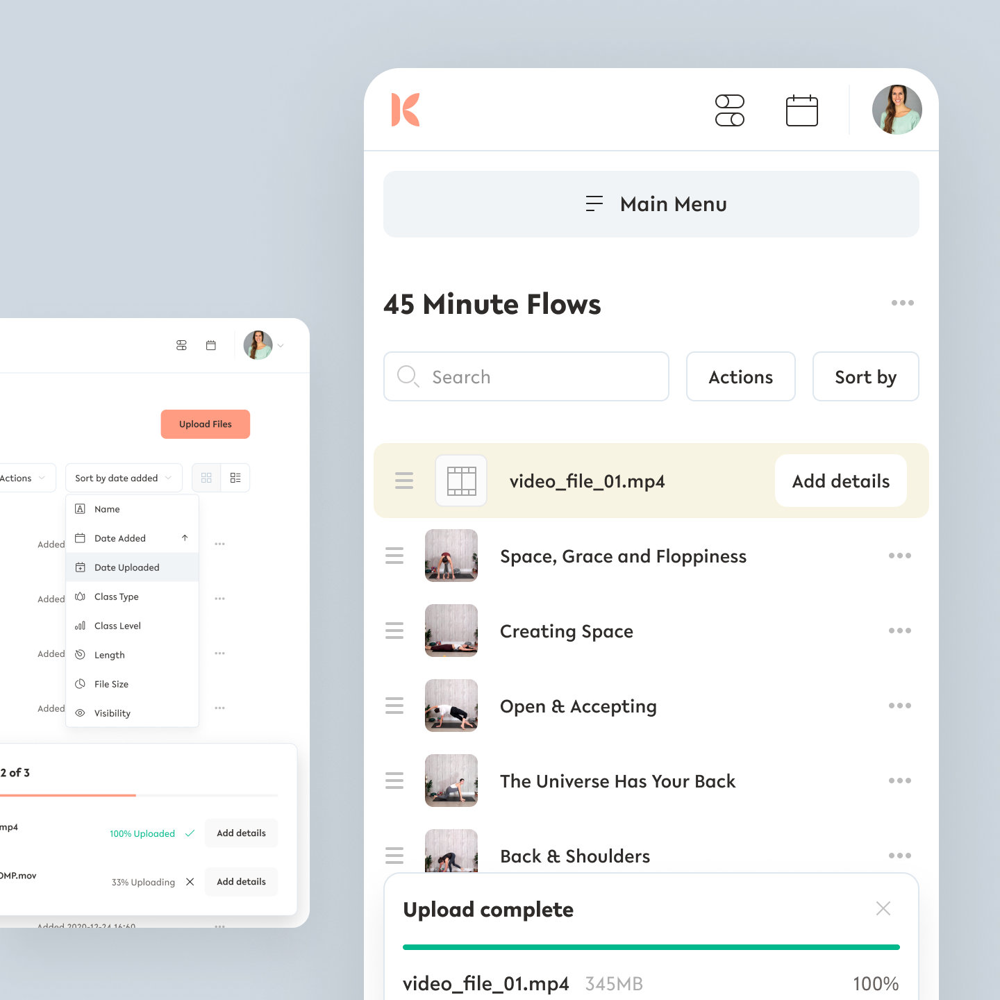
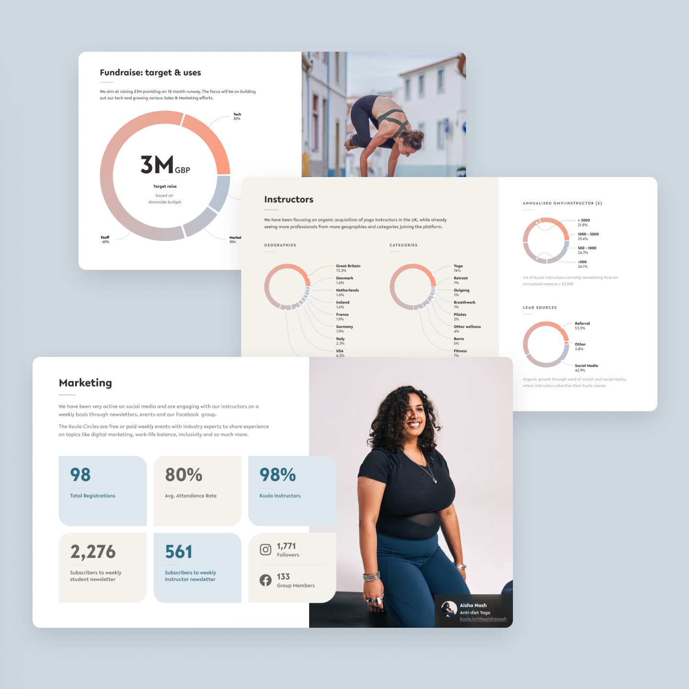
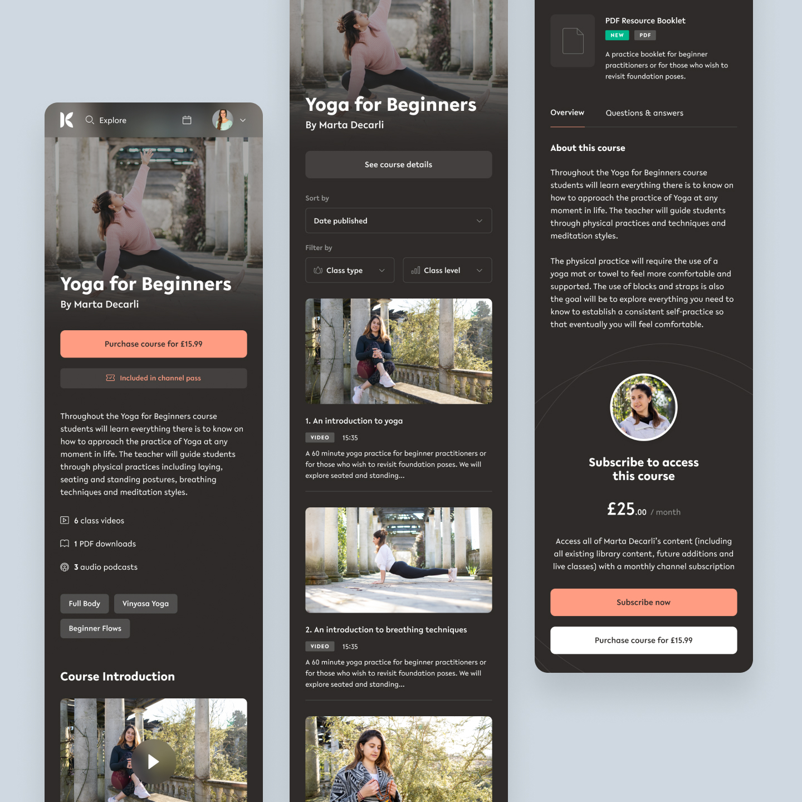
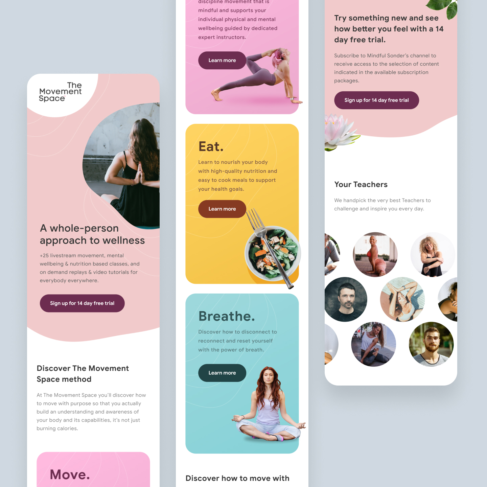

Kuula TV
At Kuula I defined the visual identity and streamlined media management for an online teaching platform, supporting brand growth and content scalability. Delivered marketing designs, a white-label design system, and pitch decks that helped secure client partnerships to drive platform growth 300%.





Responsibilities
- Branding and UI designDefined the initial branding and UI look and feel for Kuula and its sub-brands.
- Marketing websiteDesigned the main marketing website and partner microsites to ensure a cohesive brand experience.
- Media management systemRedesigned the UX and UI for a robust media file system, focusing on usability and scalability.
- Design systemContributed to the creation and maintenance of a design system to ensure consistency across platforms.
- User-centric featuresDesigned intuitive workflows for uploading, organising, and editing multimedia content.
Intro
Kuula is a platform designed to help users organise, share, and manage multimedia content, including videos, PDFs, images, and audio files. During my time at Kuula, I was involved in the initial stages of branding and UI design, as well as the redesign of the media management system. My work focused on creating a seamless experience for users to upload, categorise, and manage their content, while ensuring the platform was visually cohesive and easy to navigate.
Key features and functionality
Branding and UI design
- Visual identityDefined the visual identity for Kuula, including colour palettes, typography, and iconography.
- Cross-platform consistencyCreated a consistent look and feel across the main website and partner microsites.
Media management system
- Content differentiationDesigned clear visual distinctions between different types of content, such as courses, video collections, and individual files.
- Sorting and organisationImplemented intuitive sorting and filtering options to help users manage large libraries of multimedia content.
- Upload workflowRedesigned the upload process to make it easy and streamlined, especially for mobile users.
- Basic editing toolsAdded rudimentary video editing features to allow users to make quick adjustments after upload.
Marketing website and microsites
- Marketing websiteDesigned a user-friendly marketing website to showcase Kuula's features and value proposition.
- Partner micrositesCreated microsites for partners, ensuring brand consistency while tailoring the content to specific audiences.
Design challenges and solutions
Challenge 1Complex content management Users needed to manage a wide variety of file types, often in large quantities, which could easily become overwhelming.
SolutionDesigned a clear hierarchy and visual distinctions between content types, along with robust sorting and filtering options.
Challenge 2Mobile-friendly uploads Many users uploaded content directly from their phones, requiring a simplified and responsive upload workflow.
SolutionStreamlined the upload process with a mobile-first approach, ensuring it was intuitive and efficient even on smaller screens.
Challenge 3Post-upload editing Users needed basic tools to edit their videos after uploading, without leaving the platform.
SolutionIntegrated rudimentary video editing features into the interface, allowing users to make quick adjustments without needing external software.
Visual design and branding
- Design systemContributed to a scalable design system to ensure consistency across the platform and marketing materials.
- Modern aestheticDeveloped a clean, modern UI that emphasised usability and visual appeal.
- Responsive designEnsured all interfaces were optimised for desktop and mobile devices.
Documentation and handoff
- Wireframes and prototypesCreated detailed wireframes and interactive prototypes for the media management system and website.
- Design specificationsProvided pixel-perfect assets and documentation for developers.
- User flowsDocumented user journeys for key features, such as content upload and organisation.
Additional details
- User testingConducted usability testing to gather feedback and refine the design.
- Iterative improvementsContinuously improved the platform based on user feedback and evolving business needs.
- CollaborationWorked closely with developers, product managers, and stakeholders to ensure alignment and high-quality output.
Summary
Working on Kuula was a rewarding experience, as it allowed me to tackle complex design challenges while creating a platform that genuinely helped users manage their multimedia content. I particularly enjoyed reimagining the upload workflow, as it was a critical part of the user experience. Seeing the positive feedback from users and the impact of my work on the platform's usability was incredibly fulfilling.